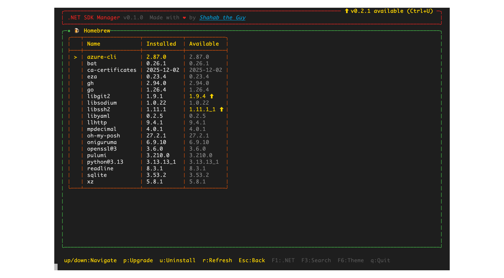
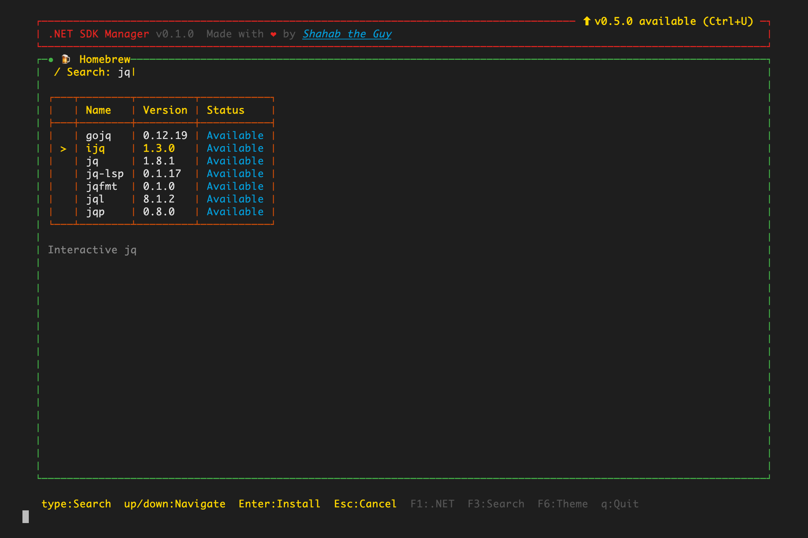

On this page Overview
Manage Homebrew packages
A visual tour of the Homebrew workspace in dsm — browse what's installed, see which formulae are outdated, and search, install, upgrade, and remove packages without leaving the terminal UI.
Reading the list
Homebrew is macOS-only, so the Homebrew workspace and its F2 shortcut only appear on macOS.
Open the Homebrew workspace
From the main screen, press F2 to switch to the Homebrew workspace. Press F1 at any time to return to the .NET workspace.
dsm lists your installed formulae with two version columns — Installed and Available. When a newer version exists, the Available column is highlighted in gold with a ⬆ (resolved via brew outdated); up-to-date formulae show the same version, muted. The list loads on entry — press r to refresh it.

- F2 — open the Homebrew workspace (from the main screen)
- ↑ ↓ or j k — move the selection
- r — refresh the installed list · F1 — back to .NET
Homebrew runs on macOS, so the workspace is only available there. If Homebrew isn't installed, the workspace shows a link to install it from brew.sh.
Search & install a formula
Press F3 (or /) to search Homebrew's catalog — the same search key as the .NET workspace.
Just start typing. Results stream in with debounce (the UI never freezes), restricted to formulae and enriched with each package's version, description, and install status. Use ↑ ↓ to highlight a result and press Enter to install it — dsm runs brew install <name>, streams the live output, then returns and refreshes.

jq — formulae appear with their version and a one-line description; Enter installs the highlighted one.- F3 or / — open search
- ↑ ↓ — move through results · keep typing to refine
- Enter — install the highlighted formula · Esc — cancel search
Upgrade & uninstall
Back in the list, manage what's already installed.
Highlight a formula and press p to upgrade it (brew upgrade <name>) — the same key as the .NET workspace. If the formula is already current, dsm tells you instead of running anything. Press u to uninstall it (brew uninstall <name>). Both drop out to the terminal to show real brew output, then return and refresh.
Choosing to install or upgrade is already an explicit action, so dsm runs brew with HOMEBREW_NO_ASK=1 — Homebrew's "Ask mode" won't interrupt with "Do you want to proceed? [y/n]"; the action proceeds directly.